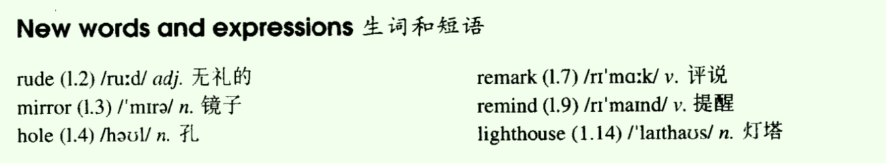
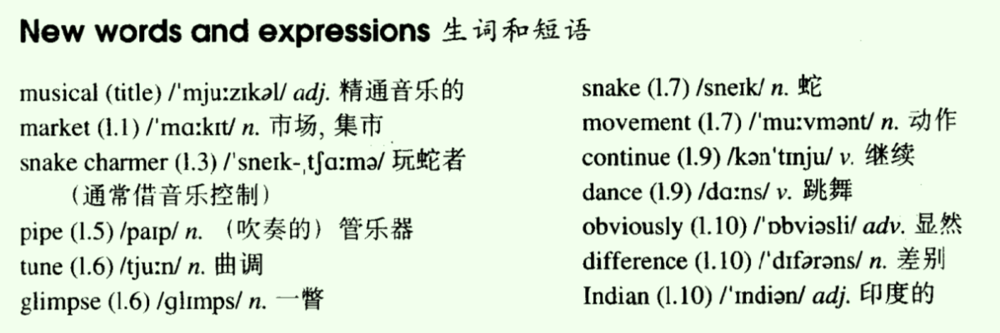
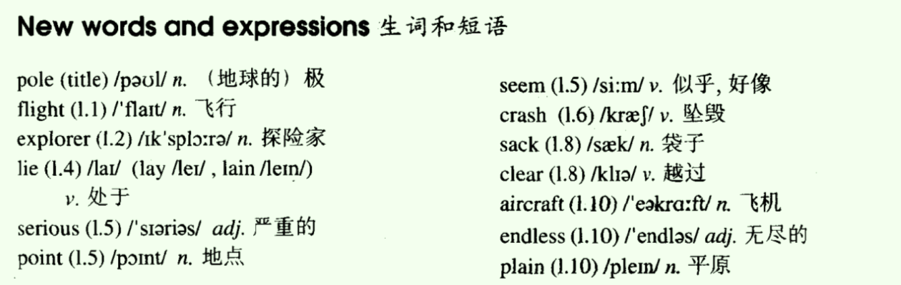
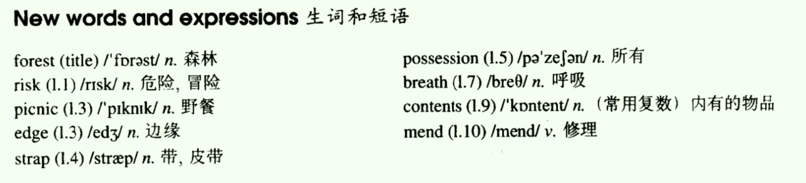
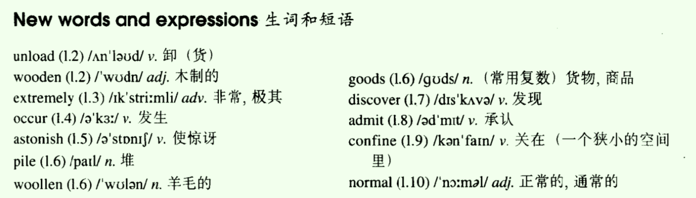
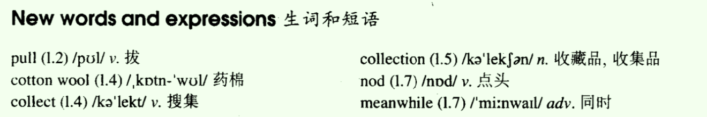

- Lesson 41 Do you call that a hat?
- Lesson 42 Not very musical
- Lesson 43 Over the South Pole
- Lesson 44 Through the forest
- Lesson 45 A clear conscience
- Lesson 46 Expensive and uncomfortable
- Lesson 47 A thirsty ghost
- Lesson 48 Did you want to tell me something?
Lesson 41 Do you call that a hat?
一、单词讲解
1、rude：adj. 无理的；
- rudely：adv. 无理的
- A rude man was shouting rudely.
2、mirror：n. 镜子；
- look at oneself in the mirror
3、remark：v. 评说；n. 评论；
4、remind：v. 提醒；
- remind sb. of sth.
- remind sb. to do sth.
- reminder：n. 提醒、提示物；
5、All

二、课文&语法讲解
1、本文重点
- need（作实义动词、作情态动词）
2、need
- a. 作实义动词（可以有时态、三单的变化）
- a) need sth.
- He needs some time.
- b) need to do / need sb. to do
- He needs to have a rest.
- He needs friends to help him.
- c) need doing（这里doing表面是主动，实际是被动；表示需要被做某事L44）
- His bag needs mending.
- 否定形式：don't need
- doesn't/didn't/won't need
- a) need sth.
- b. 作情态动词
- a) need do：通常只用在否定句、疑问句中；肯定句用must、have to、ought to、should
- Need I finish it now?
- You needn't finish it now.
- b) need have done：是一种虚拟的用法
- 否定形式：needn't
- a) need do：通常只用在否定句、疑问句中；肯定句用must、have to、ought to、should
- a. 作实义动词（可以有时态、三单的变化）
3、课文
- What kind of shopping does the writer enjoy, do you think?
- 'Do you call that a hat?' I said to my wife.
- 'You needn't be so rude about it,' my wife answered as she look at herself in the mirror. 情态动词
- I sat down on one of those modern chairs with holes in it and waited.
- with：介词，表示“伴随着有...”
- with sth. + 介词短语：表示“伴随着有...在哪里”
- L22：a piece of paper with her name and address on it
- a wallet with 200 dollars in it
- a bus with 50 people on it
- without：和with用法一样，表示“伴随着没有...”
- We had been in the hat shop for half an hour and my wife was still in front of the mirror.
- in front of：在...的前面（一个东西的外部的前面）
- in the front of：在一个东西内部的前面
- She is sitting in the front of the bus.
- 'We mustn't buy things we don't need,' I remarked suddenly.
- mustn't：情态动词，“禁止、不允许”；
- things we don't need：定语从句，这里need为实义动词；
- I regretted saying it almost at once.
- regret、regretted、regretted：后悔
- regret sth.
- regret doing sth：后悔做某事（已经做完了）
- almost：adv. 差不多，几乎
- 'You needn't have said that,' my wife answered.
- need have done（虚拟） ：这里need为情态动词；过去需要做某事（“本来需要做某事，但事实上没做”），虚拟的用法，翻译时，加上“本来”；
- 否定：needn't have done：本来不需要做某事，但事实上做了；
- 'I needn't remind you of that terrible tie you bought yesterday.'
- remind sb. of sth.
- that terrible tie you bought yesterday
- needn't do（真实）：这里need为情态动词；不需要做，就真的不做；
- 'I find it beautiful,' I said. 'A man can never have too many ties.'
- can not ... too ...、can never ... too ...：“再...也不过分，再...也不为过”；
- You can never be too careful when you cross the street.
- 'And a woman can't have too many hats,' she answered.
- 一个男人不会有过多的领带。（有再多的领带也不为过）
- Ten minutes later we walked out of the shop together.
- My wife was wearing a hat that looked like a lighthouse!
- look like：like介词，“像...一样” L16、L25
- She looks like her father.
三、知识扩展
- 1、need
Lesson 42 Not very musical
一、单词讲解
1、musical：adj. 精通音乐的、音乐的、悦耳的；
- al：形容词后缀
- musical instrument：乐器
2、tune：n. 曲调；
- play a tune：演奏一曲
- iTunes；
3、glimpse：n. 一瞥（q quick look）
- have/get/catch + a glimpse of ...
- We had a glimpse of the snake.
4、difference：n. 差别
- ce -> t：different：adj.
- tell the different between ... and ...：tell这里表示“分辨、辨别”
All

二、课文&语法讲解
1、本文重点
- 复习have的用法（L18）：实义动词、助动词
2、have的用法
- 实义动词
- “有”
- “吃喝玩乐”、“做”：have a swim/walk
- 表示“做”时，have a + n. = 对应的v.
- have a walk（n.） = walk（v.）
- We have a walk. = We walk.
- We had a walk yesterday. = We walked yesterday.
- 注意：不是所有的词都适用，只适用于该词同时具有名词、动词两种词性；
- have a rest、rest
- have a look、look
- have a swim、swim
- have a sleep、sleep
- I wanted to smoke. = have a smoke
- They swam in the sea this morning. = had a swim
- She is resting. = is having a rest
- He was looking at you. = was having a look
- 表示“做”时，have a + n. = 对应的v.
- 助动词（无实义，用于完成时态中）
- 实义动词
3、课文
- What happened when the snake charmer began to play jazz?
- As we had had a long walk through one of the markets of Old Delhi, we stopped at a square to have a rest.
- had had：have的过去完成时
- After a time, we noticed a snake charmer with two large baskets at the other side of the square, so we went to have a look at him.
- As soon as he saw us, he picked up a long pipe which was covered with coins and opened one the baskets.
- pick up：捡起拿起，顺路接某人、偶然学到了什么（引申义）
- I will pick you up on my way home.
- He picked up some Japanese when he worked there.
- When he began to play a tune, we had our first glimpse of the snake.
- It rose out of the basket and began to follow the movements of the pipe.
- rise、rose、risen：vi. 上升、升起
- rose：玫瑰花
- rise：vi. The sun rise every day.
- raise：vt. You raise me up. 你把我举起。 过去式、过去分词：raised
- We were very much surprised when the snake charmer suddenly began to play jazz and modern pop songs.
- The snake , however, continued to 'dance' slowly.
- but：表示转折时，是连词，位置放在两个句子中间进行连接（第一句子逗号，but第二个句子句号）；注意相同成分可以省略；
- He is young but very experienced.
- however：表示转折时，是副词，绝不能放到两个句子中间进行连接；只能修饰一句话（可以放在句首、句中（插入语）、句尾）；
- However, the snake continued to 'dance' slowly.
- The snake continued to 'dance' slowly , however.
- but：表示转折时，是连词，位置放在两个句子中间进行连接（第一句子逗号，but第二个句子句号）；注意相同成分可以省略；
- It obviously could not tell the difference between Indian music and jazz!
- tell：分辨
三、知识扩展
- 1、have的用法
Lesson 43 Over the South Pole
一、单词讲解
1、pole：n.（地球的、电池）极、竿；
- the South Pole：南极
- the North Pole：北极
- fishing pole：鱼竿
2、flight：n. 飞行、航班；
- Flight CA112 is boarding. Please get ready.
3、explorer：n. 探险家、探测器；
- Internet Explorer = IE
- explore：v. 探测、探险、探索
- exploration：n. 考察、探险；
- adventure：n. 冒险；
4、lie两种含义：
- v. 表示“说谎”；lie -> lied -> lied -> lying
- v. 表示“躺、处于、位于”；lie -> lay -> lain -> lying
- lay两种含义：
- a. 表示过去的“躺、处于、位于”
- The beggar lay there yesterday.
- b. 不表示过去，作动词原形 “产卵、下蛋；放置、摆放L96 ”
- lay -> laid -> laid -> laying
- a. 表示过去的“躺、处于、位于”
5、serious：adj. 严重的、严肃的；
- The problem of air pollution is serious.
- I am serious. I'm not joking.
6、point：n. 地点；
- at one point
- v. 点出、指出
- They pointed out the problem.
- point at/to ...
7、endless：adj. 无尽的；
- endless white plains
- Endless Love
- -less
- careless
- worthless
All

二、课文&语法讲解
1、本文重点
- can/be able to
- 主语从句
2、课文
- How was the plane able to clear the mountains?
- In 1929, three years after his flight over the North Pole, the American explorer, R.E. Byrd, successfully flew over the South Pole for the first time.
- 同位语
- fly over ...
- for the first time
- Though, at first, Byrd and his men were able to take a great many photographs of the mountains that lay below, they soon ran into serious trouble.
- at first
- be able to do sth.
- a great many + 可数名词复数
- take photographs of ...
- run into trouble
- 区分can、be able to：
- 相同点：都表示能力，“能够”（can/could；be able to时态更灵活）
- 不同点：
- 1）表示过去已经成功做到的，用was/were able to, 不用could；could只表示过去有能力做，但不一定真的做；
- 2）can可以表示猜测，允许；
- lie、lay、lain
- that lay below：定语从句，that做主语
- At one point, it seemed certain that their plane would crash.
- seem + adj.
- it（形式主语） ? that their plane would crash 主语从句
- That their plane would crash seemed certain. 头重脚轻
- At one point：在某一地方；
- it seemed certain：看起来肯定
- certain：某一、必然的
- contain：包含
- It could only get over the mountains if it rose to 10,00 feet.
- rise、rose、risen
- get over the mountains：越过山头
- Byrd at once ordered his men to throw out two heavy food sacks.
- order v.、n.
- keep the order
- May I take your order, please? 点餐
- order v.、n.
- The plane was then able to rise and it cleared the mountains by 400 feet.
- by：这里表示相差的额度、差额；
- 400feet约等于120m（400*0.3）
- Byrd now knew that he would be able to reach the South Pole which was 300 miles away, for there were no more mountains in sight.
- for：表示原因，也可以使用because
- because可以放在句子的前一部分、后一部分，位置灵活；
- for必须放在后一部分，不能放在前一部分，适用于“前果后因”的的句子；
- for：表示原因，也可以使用because
- The aircraft was able to fly over the endless white plains without difficulty.
- without difficulty：没有什么困难
3、主语从句
- 含义：一个句子作主语；
- 位置：句首、句尾（形式主语it）
- It seemed certain that their plane would crash. 推荐
- That their plane would crash seemed certain.
- 写法：
- 与宾语从句（L15、L26、L39）相同，“词（陈述句缺什么成分加什么词） + 陈述句”；但是：
- a. that不能省略；
- b. 只能使用whether，不能使用if；
- 复习 宾语从句
- I know that you are right.
- I know what she will say.
- I know whether he is happy.
- 练习 主语从句
- 你不能跟我们一起去真是一个遗憾。
- That you can't go with us is a pity.
- It is a pity that you can't go with us.
- 他们是否将会准时到达这不确定。
- Whether they will arrive here on time is uncertain.
- It is uncertain whether they will arrive here on time.
- 你不能跟我们一起去真是一个遗憾。
- 与宾语从句（L15、L26、L39）相同，“词（陈述句缺什么成分加什么词） + 陈述句”；但是：
三、知识扩展
- 1、主语从句
- What impressed the tourists most （给游客印象最深的）was the friendliness and warmth of the local people. （friendliness：友谊、亲切）
- What most people haven't realized (主动)/ What is not realized by many people（被动） （很多人所没有意识到的）is that Simon is a lover of sports, and football in particular.
- What most parents care about / What most parents are concerned about / The concern of most parents （大多数父母所关心的） is providing the best education possible for their children.
Lesson 44 Through the forest
一、单词讲解
1、risk：n. 危险、冒险；
- take / run the risk (of ...) 冒着...的危险
- be at risk
- v. 冒险、使面临风险
2、picnic：n. 野餐
- have a picnic
- go for a picnic：更强调动作
3、edge：n. 边缘
- at the edge of ...
- at the edge of a forest / a cliff
4、possession：n. 所有
- possess：v. 拥有
- in one's possession 为某人所有
- The bag is in their possession.
5、 breath：n. 呼吸；
- be out of breath：上气不接下气
- hold one's breath：屏住呼吸
- take a deep breath：深呼吸
- take one's breath away：让某人惊奇、震惊
- breathe：v. 呼吸
6、contents：n. 内有的物品
- the contents of the bag
7、mend：v. 修理；
- repair
- fix
All

二、课文&语法讲解
- 1、课文
- How did Mrs. Sterling get her bag back?
- Mrs. Anne Sterling did not think of the risk she was taking when she ran through a forest after two men.
- 定语从句；作宾语，省略which/that
- take the risk：冒...风险
- run after：追赶
- They had rushed up to her while she was having a picnic at the edge of a forest with her children and tried to steal her handbag.
- rush up to sb. 冲向某人
- In the struggle, the strap broke and , with the bag in their possession, both men started running through the trees.
- 插入语
- L22，with + n. + 介词短语
- in one's possession：为...所有
- Mr. Sterling got so angry that she ran after them.
- that引出结果状语从句
- so + adj./adv. + that ...
- such + n./n.词组 + that ...
- She was soon out of breath, but she continued to run.
- When she caught up with them, she saw that they had sat down and were going through the contents of the bag, so she ran straight at them.
- catch up with ...：追赶上了...
- go through a forest / book：穿过一个树林，浏览一本书
- the contents of ...
- run straight at ...：直冲...
- The man got such a fright that they dropped the bag and ran away.
- 'The strap needs mending,' said Mrs. Sterling later, 'but they did not steal anything.'
- need doing sth.：需要做某事（这里need为实义动词；这里doing主动表被动的含义）L41
三、知识扩展
1、doing动名词
- 作用：当做名词来用
- a. 作主语；
- b. 介词后面作宾语（注意介词to）；
- c. 有些动词后作宾语（不是所有的动词都可以接doing的，如want to do）；
- 注意：有些动词后，既能接doing又能接to do；
- 意思一样
- They began to run. = They began running.
- start/continue
- 意思有差异
- I hate to disturb you, but can I come in for a moment? 偶尔、临时性、此刻讨厌
- I hate disturbing people when they are busy. 总是讨厌
- love/like/dislike
- 意思一样
- 作用：当做名词来用
2、补充：to
- 1）作不定式：to do，表目的
- 2）作介词：表示方向，go to school
- look forward to
- I am looking forward to seeing him tomorrow.
- I am accustomed to getting up early. 习惯于...
- I am used to getting up early. 习惯于...
- used to do sth.：过去常常做某事（现在不在做了），可以替换一般过去时；L31
- be used to doing sth.：习惯于做某事；
- He's quite used to working hard.
- be used to do sth.：被用来做...；
- This knife can be used to cut things.
Lesson 45 A clear conscience
一、单词讲解
1、conscience：n. 良心、道德心；
- have a clear conscience
- have no conscience
- science：n. 科学、理科；
2、wallet：n. 皮夹、钱包；
- purse：n. 手包；
- purchase：v. 购买；
3、village：n. 村庄；
4、All

二、课文&语法讲解
- 1、课文
- How did Sam get his money back?
- The whole village soon learnt that a large sum of money had been lost.
- learn：v. 学习、了解、知道、懂得；
- learn、learned、learned
- learn、learnt、learnt
- had been lost
- 被动态语态与 时态 相结合（L21）
- The whole village soon learnt ...（后）
- a large sum of money had been lost.（前）
- Classrooms had been cleaned before I came back.
- 被动态语态与 情态动词 相结合（L21）
- ... passing planes can be heard ...
- ... it could not be used then.
- Over a hundred people must have been driven away. 推测过去的被动
- 被动态语态与 时态 相结合（L21）
- learn：v. 学习、了解、知道、懂得；
- Sam Benton, the local butcher, had lost his wallet while taking his savings to the post office.
- butcher：屠夫
- while taking his savings to the post office：while是连词；现在分词用于连词之后，与表示时间的状语从句while he was taking his savings作用是一致的；
- Sam was sure that the wallet must have been found by one of the villagers, but it was not returned to him.
- Three months passed, and then one morning, Sam found his wallet outside his front door.
- It had been wrapped up in newspaper and it contained half the money he had lost, together with a note which said:'A thief, yes, but only 50 per cent a thief!'
- Two months later, some more money was sent to Sam with another note:'Only 25 per cent a thief now!'
- In time, all Sam's money was paid back in this way.
- in time：这里翻译成“最后、终于”
- The last note said:'I am 100 per cent honest now!'
三、知识扩展
- 1、被动语态
- Oh, my god! I can’t find my key to the car.
- Don’t worry. Perhaps it C at your home.
- A. left；B. has left；C. was left；D. had left；
- Don’t worry. Your package C here until you come back, so enjoy shopping here.
- A. will keep；B. has kept；C. will be kept；D. has been kept；
- 在时间状语从句中，使用一般现在时表示将来； until you come back
- - Tomorrow he will be watching her anxiously as she swims the long distance to England. L36
- David, turn off the TV C no one is watching it.
- But it C off already! The music is from the outside.
- A. so that; has been turned；B. when; has turned；C. if; has been turned；D. because ; has turned；
- The famous novel is said to have been translated into several languages. （已被译成多种语言）
- be said to do：据说...
- Jane is tried of dealing with customer complaints and wishes that she could be assigned to do another job/task.（能被分配做另一项工作）
- wich表“希望”，通常后面的句子接虚拟，因此时态往前推一个时态，can -> could；
- The anti-virus agent was not known until a doctor discovered it by chance / until it was accidentally found/discovered by a doctor(推荐使用被动的，更客观些). （直到一个医生偶然发生了它）
Lesson 46 Expensive and uncomfortable
一、单词讲解
1、unload：v. 卸（货）
- unload boxes
- unload passengers.
- load：v. 装（货），放入
- download、upload
2、extremely：adv. 非常、极其地；
3、occur：v. 发生；
- occurred、occurred
- sth. occur to sb. 某事发生某人身上，引申义（某人突然想起某事）
- A good idea occurred to me. = I suddenly got a good idea.
- to do sth. occur to sb.：某人突然想起来去做某事
- 避免头重脚轻：= It occurs/occurred to sb to do sth.
- It occurs to me to call my mom.
- It suddenly occurred to one of the workers to open up the box.
4、astonish：v. 使惊讶
- be astonished at ...：惊讶于...
- be surprised at ...
5、admit：v. 承认
- admitted、admitted
- I'm wrong, and I admit it.
- admit doing
- The man admitted hiding in the box.
6、All

二、课文&语法讲解
1、本文重点
- 同位语从句
- doing/ being done
- 介词后的宾语从句
2、课文
- What did the man in this story do?
- When a plane from London arrived at Sydney airport, workers began to unload a number of wooden boxes which contained clothing.
- arrived at（点）/in（里面）
- No one could account for the fact that one of the boxes was extremely heavy.
- account for：解释说明，explain
- that one of the boxes was extremely heavy：这里that不作成分，这里是同位语从句
- 定语从句中，每一个关系词（包括that）都做成分；
- It suddenly occurred to one of the workers to open up the box.
- It occurs/occurred to sb. to do sth.：某人突然想起作某事
- He was astonished at what he found. 宾语从句（介词后的宾语从句）
- He was astonished at __.
- What did he find?
- 这里what可改写成the thing which，这样就是定语从句了
- A man was lying in the box on top of a pile of woollen goods.
- lie：说谎，lied、lied、lying
- lie：躺、位于，lay、lain、lying
- lay：产卵、下蛋，放置、摆放，laid、laid、laying
- lying（adj. 说谎的；躺着的，卧着的）
- pile：n. 堆、大量；
- He was so surprised at being discovered that he did not even try to run away.
- doing （主动）/ being done（被动）：放在介词后面后，构成介宾结构；动名词；
- He was so surprised at discovering 主动发现...
- He was so surprised at being discovered 被发现
- I was puzzled at being invited (invite) to the stranger's weeding.
- She was amused at talking (talk) with her new friend.
- He was delighted at being promoted (promote) to senior manager.
- The thief was shocked at being caught (catch) by the police.
- so ... that：引出结果状语从句
- After he was arrested, the man admitted hiding in the box before the plane left London.
- admit doing：承认做过某事；动名词doing作admit的宾语
- He had had a long and uncomfortable trip, for he had been confined to the wooden box for over eighteen hours.
- 第一个for：for + 句子，表示“原因”，不能放在句首；L38
- 第二个for：for + 时间，表示“持续多久”；
- be confined to：被困在...
- The man was ordered to pay ￡3,500 for the cost of the trip.
- for：表示“目的”；
- A of B
- The normal price of a ticket is ￡2,500!
3、同位语从句
- 含义：一个句子作同位语，解释说明前面名词；
- 位置：所解释的“抽象名词”后，比如face、news、theory、idea、suggestion、report...；“具体的名词”不需要解释说明，就不需要同位语从句了，比如apple...；
- 写法：同宾语从句（L26）；
- 最常用的结构是“that + 完整的陈述句”，that不作成分，也不能省略；
- 我毫不怀疑他将会帮我的忙。
- I have no doubt that he will help me.
- 我支持这个观点，校车问题必须严肃对待。
- I support the argument that the problems of school buses must be taken seriously.
- be taken seriously：被严肃对待
- 区别：
- No one could account for the fact that one of the boxes was extremely heavy. 同位语从句
- No one could account for the fact that rocked the world. 定语从句
- 同位语从句、定语从句 对比
- 相同点：都跟在名词后；
- 不同点：
- 同位语从句是解释说明名词的，两个是一回事，翻译时顺着翻译；
- 定语从句是修饰名词的，翻译成“...的 名词”；
- 区分标准：
- a. 省略that的是定语从句；
- b. 不抽象名词后面是定语从句；
- c. that作成分的是定语从句；
三、知识扩展
- 1、同位语从句、定语从句 区别
- 同位语从句：解释说明名词；
- 定语从句：修饰限制名词；
- No one could account for the fact that one of the boxes was extremely heavy. 同位语从句
- No one could account for the fact that rocked the world. 定语从句
- It is one of the ugliest faces I have ever seen. 定语从句
- He became the proud owner of a bed which had springs and mattress. 定语从句
Lesson 47 A thirsty ghost
一、单词讲解
1、thirsty：adj. 口渴的、渴望的；
- I am thirty.
- I feel thirty.
- The man was thirsty for power/knowledge/success.
2、ghost：n. 鬼魂；
- a creepy ghost story：creepy 令人毛骨悚然的；
3、haunt：v. 鬼来访（主动）、闹鬼（被动）；
- people say ghosts haunt the old house.
- The house is haunted (by the ghosts).
- 引申义：v. （不愉快的事情）萦绕心头；
- If something unpleasant haunts you, try to ignore it and move on.
- She was haunted by bad feelings night and day.
4、block：v. 堵；
- The highway was blocked by a few trucks.
- The clouds blocked his view of the mountains.
- n. 拥堵、大楼、街区；L29
- traffic block/jam
- a block of flats：一座公寓楼
- She walked three blocks down the main street.
5、furniture：n. 家具；
- 不可数，加上量词就可数了
- a piece of furniture
6、suggest：v. 暗示、建议；
- suggest doing
7、shake：v. 摇动；
- shake、shook、shaken
- shake one's head 摇头
- shake hands with sb. 和某人握手
- shock：v. 使震惊；
All

二、课文&语法讲解
- 1、课文
- What evidence is there of a ghost?
- A public house which was recently bought by Mr.lan Thompson is up for sale.
- a public house：小酒馆
- be up for sale：出售
- which was recently bought by ...：定语从句、被动语态
- Mr. Thompson is going to sell it because it is haunted.
- 一般将来时、被动语态
- He told me that he could not go to sleep one night because he heard a strange noise coming from the bar.
- 间接引语（宾语从句）
- The next morning, he found that the doors had been blocked by chairs and the furniture had been moved.
- 宾语从句、过去完成时的被动语态
- Though Mr. Thompson had turned the light off before he went to bed, they were on in the morning.
- 过去完成时、一般过去时
- He also said that he had found five empty whisky bottles which the ghost must have drunk the night before.
- must have done：推测过去 L17
- When I suggested that some villagers must have come in for a free drink, Mr. Thompson shook his head.
- a free drink：免费饮料
- shake one's head：摇头，表示异议；
- The villagers have told him that they will not accept the pub even if he gives it away.
- even if：即使
- even if he gives it away：即使他白送人
三、知识扩展
- 1、复习前两单元内容：
- 句子的分类（安装结构划分）
- 简单句
- 谓语动词（变化：时态、语态、情态、变态；时态是必备的）；
- 并列句
- 复合句：主句 + 从句
- 名词性从句（主L43、宾L26/L15/L39、表L29、同位L46）
- 定语从句
- 状语从句
- 简单句
- 句子的分类（安装结构划分）
Lesson 48 Did you want to tell me something?
一、单词讲解
1、pull：v. 拉；
- pull out a tooth
- push：v. 推；
2、collect：v. 搜集、收集、取走；
- collect evidence
- collect information
- collect stamps
- collect matches boxes
- collect the mail：取走邮件
- collection：n. 收集、收集品、收藏品；
3、meanwhile：adv. 同时；
- Our boss reported to the supervisor about the problem. Meanwhile, we were trying to solve it.
- 不具备连词功能；
All

二、课文&语法讲解
1、本文重点
- 复习第二单元讲过的全部内容；
2、课文
- Why did the writer become very worried?
- Dentists always ask questions when it is impossible for you to answer.
- 时间状语从句
- it形式主句、to answer 真正的主句
- My dentist had just pulled out one of my teeth and had told me to rest for a while.
- 并列句的省略L25
- 平行结构：多个成分并列；
- to rest（v.） = to have a rest（n.） L42
- for a while：持续一段时间
- I tried to say something, but my mouth was full of cotton wool.
- wool：羊毛、毛线、绒线；
- He knew I collected match boxes and asked me whether my collection was growing.
- He then asked me how my brother was and whether I liked my new job in London.
- 省略了he asked me
- In answer to these questions I either nodded or made strange noises.
- Meanwhile, my tongue was busy searching out the hole where the tooth had been.
- search out：搜寻
- I suddenly felt very worried, but could not say anything.
- When the dentist at last removed the cotton wool from my mouth, I was able to tell him that he had pulled out the wrong tooth.
三、知识扩展
- 1、复习第二单元的内容
- 多件事：并列句、主从复合句（主句不变，从句前面加连接词）